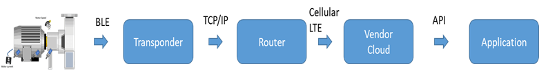
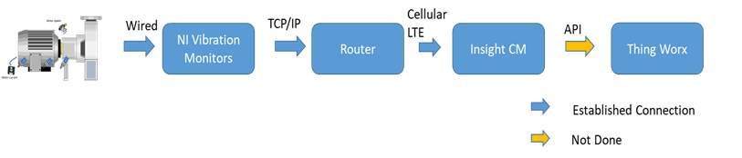

HCL was informed that Lilly already have different CoE's for Oil analysis, Vibration, Thermal, Ultrasonic also collecting sample data for such analysis manually. Further, Lilly has a best-in-class (60%-40%) figures for preventive to reactive maintenance figures of 70%-30%, where 30% maintenance is reactive work.
To enhance the availability and efficiency aspects of the manufacturing lines, Reliability engineering team has identified 5-10% critical components of machines across all Lilly sites. The criteria used to identify a critical asset are:
Redundancy within the process step
Anything more than 8-hrs of wrench time with spare parts
Mean time to repair - if it involves getting support from an overseas 3rd party OEM or even a stateside OEM
Mean time between failure. if capacity has exceeded design capabilitie
Designing a typical condition based and predictive analytics framework can't ignore the fact that 70% of condition monitoring programs are accomplished using Vibration Analysis. Lilly has been engaging many vendors on its shop floor to advice on the sensor/gateway strategy for vibration monitoring programs.
As-Is PoCs -
Existing Nikola Tech Architecture

Figure 27: Nikola Tech Labs PoC Architecture
Existing Nikola Tech Architecture

Figure 28: NI � Insight CM - Thingworx Architecture
Lilly Expectations-
However, the expectations form the Applied IIoT architecture are:
Sensor/Gateway strategy for both traditional time-series measurements & vibration-based condition & predictive monitoring program, involving high frequency time-series measurements and frequency domain transformation.
Data patterns for sensors and gateways, device interoperability and positioning of proposed network Architecture within current Manufacturing/IT network.
Comments/ Observations-
Conditioning of high-speed data (converting vibration data to FFT for observing harmonics) and integration of that data with aggregator systems is an issue at present.
It is observed that the association of machine operating condition related dataset with vibration data of the asset need to be aggregated.
HCL observes that there could be possibility that Lilly may lock itself with some vendor cloud for may be every other PoC. For various such PoC in that case, Lilly may need to create a new cloud-to-cloud interface for fetching vibration data from that vendor's cloud to Lilly enterprise cloud which may become a big headache for Lilly to manage.
Since many experiments with different vendors have been conducted for predictive maintenance using vibration analytics, it is observed that Lilly needs an integrated strategy for high-speed vibration data communication and storage for analytics.
Raw vibration data needs to be stored, because of the dual need for technical analysis of harmonics (that indicates a potential abnormality) and also a process need for audit trail i.e. tracing back to the raw data to factually prove the Predictive Maintenance strategy followed.
For pharma industry clean room practices and maintaining good manufacturing practices (GMP) is necessary. However, if there is a change in the manufacturing environment done for an IoT PoC, the whole GMP environment need to be validated again, which is very costly. HCL understands that there is a need to avoid cost associated with entire re-validation of manufacturing environment